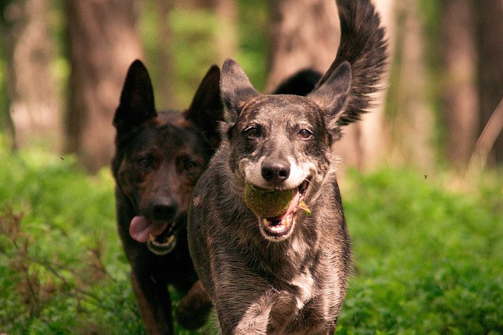

Fun Facts about Dogs
Emily Colladay

Dogs have undoubtedly been humans' best friend throughout history,
but what makes them so special? Here are a few fun facts to confirm that yes, dogs are the best.
Stray dogs in Russia have been noted to use complex subway systems
on their own, getting off at specific stops where they know they will find food.
Dogs can be trained to detect cancer through a person's breath, due to the difference
in metabolic waste products found in cancer cells compared to healthy cells.
The African Hunting dog is the most successful mammalian hunter, according to Guiness
World Record, with hunt success rates around 50-70%.
When petting and gazing into each other's eyes, dogs and humans both release oxytocin -
a "love" hormone!
Need more convincing? Click here to read about some famous dogs who made history, from the cinema
to outer space!